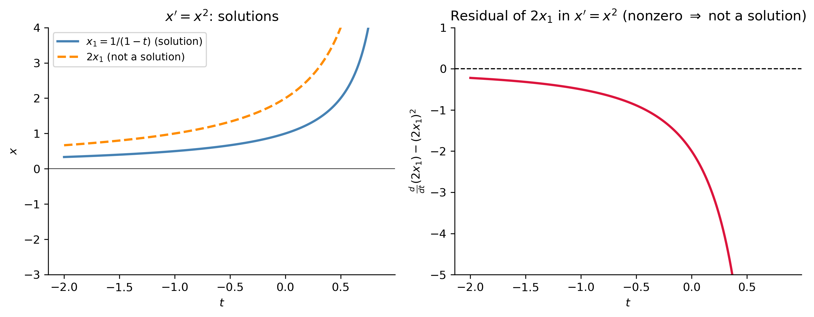
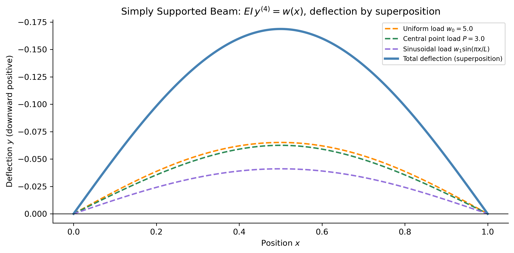
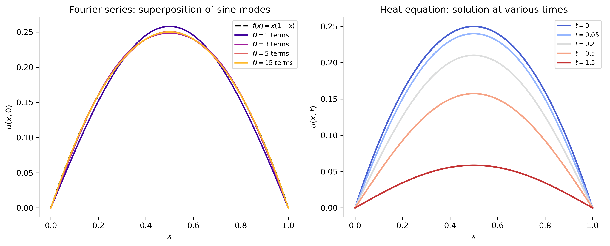

import numpy as npimport sympy as symimport matplotlib as mplimport matplotlib.pyplot as pltfrom scipy.integrate import solve_ivpfrom IPython.display import Math, displaympl.rcParams['figure.dpi'] =150mpl.rcParams['axes.spines.top'] =Falsempl.rcParams['axes.spines.right'] =False
Linearity is one of the most powerful and pervasive ideas in all of mathematics, science, and engineering. It underlies Fourier analysis, quantum mechanics, circuit theory, structural mechanics, optics, and the entire theory of linear differential equations. At its heart is a single, elegant consequence: the principle of superposition — the solutions to a linear problem can be added together to produce new solutions.
This section develops the concept of linearity carefully, states the superposition principle precisely for differential equations, and then illustrates why it is so important in physics and engineering.
What Does “Linear” Mean?
Linear Maps
The abstract foundation of linearity is the concept of a linear map (also called a linear operator or linear transformation). A map \(L\) from a vector space to itself is linear if it satisfies two properties for all functions (or vectors) \(u\), \(v\) and all scalars \(\alpha\):
Additivity:\(L(u + v) = L(u) + L(v)\)
Homogeneity:\(L(\alpha u) = \alpha\,L(u)\)
These two conditions are often combined into the single statement: \[
L(\alpha u + \beta v) = \alpha\,L(u) + \beta\,L(v)
\] for all scalars \(\alpha\), \(\beta\). A map satisfying this is called linear; any map that fails it is nonlinear.
NoteFamiliar Linear Maps
Differentiation:\(L = \dfrac{d}{dt}\). We have \((f+g)' = f'+g'\) and \((\alpha f)' = \alpha f'\).
Integration:\(L[f] = \int_a^b f(t)\,dt\).
Multiplication by a function:\(L[f] = p(t)f(t)\).
Matrix multiplication:\(L[\mathbf{x}] = A\mathbf{x}\) for a fixed matrix \(A\).
Linear Differential Operators
A linear differential operator of order \(n\) is a map of the form \[
L[x] = a_n(t)\,x^{(n)} + a_{n-1}(t)\,x^{(n-1)} + \cdots + a_1(t)\,x' + a_0(t)\,x,
\] where the coefficient functions\(a_k(t)\) depend only on the independent variable \(t\), not on the unknown \(x\) or any of its derivatives.
Examples.
Operator
Linear?
Why
\(L[x] = x'' + 3x' - 2x\)
✓
Constant coefficients, no products of \(x\)
\(L[x] = x'' + \sin(x)\)
✗
\(\sin(x)\) is nonlinear in \(x\)
\(L[x] = x'' + t^2 x' + e^t x\)
✓
Variable coefficients, but linear in \(x\)
\(L[x] = x\,x''\)
✗
Product of \(x\) and \(x''\)
\(L[x] = (x')^2\)
✗
Square of a derivative
Verification of linearity. For \(L[x] = a_n(t)x^{(n)} + \cdots + a_0(t)x\): \[
L[\alpha u + \beta v]
= a_n(\alpha u^{(n)} + \beta v^{(n)}) + \cdots + a_0(\alpha u + \beta v)
= \alpha\,L[u] + \beta\,L[v]. \checkmark
\]
The Principle of Superposition
The linearity of \(L\) has an immediate and profound consequence.
ImportantPrinciple of Superposition — Homogeneous Equation
If \(x_1(t)\) and \(x_2(t)\) are both solutions of the homogeneous linear ODE \[
L[x] = 0,
\] then any linear combination \(x(t) = C_1 x_1(t) + C_2 x_2(t)\) is also a solution, for any constants \(C_1\) and \(C_2\).
Proof. Simply apply \(L\) to the combination and use linearity: \[
L[C_1 x_1 + C_2 x_2] = C_1\,L[x_1] + C_2\,L[x_2] = C_1 \cdot 0 + C_2 \cdot 0 = 0. \quad\checkmark
\]
This extends immediately to any finite (or even infinite!) number of solutions: if \(L[x_k] = 0\) for \(k = 1, 2, \ldots, m\), then \[
x = \sum_{k=1}^m C_k x_k
\] is also a solution for any constants \(C_1, \ldots, C_m\).
ImportantSuperposition for Inhomogeneous Equations
Let \(x_p\) be any particular solution of the inhomogeneous equation \(L[x] = q(t)\), and let \(x_h\) be the general solution of the homogeneous equation \(L[x] = 0\). Then the general solution of the inhomogeneous equation is \[
x(t) = x_h(t) + x_p(t).
\]
Moreover, if \(L[x_p^{(1)}] = q_1(t)\) and \(L[x_p^{(2)}] = q_2(t)\), then \[
L\!\left[x_p^{(1)} + x_p^{(2)}\right] = q_1(t) + q_2(t).
\] A particular solution for a sum of forcings is the sum of particular solutions.
This second statement is the key to handling complicated forcing functions: decompose \(q(t)\) into simpler pieces, solve each piece separately, then add the results.
Why Superposition Fails for Nonlinear Equations
It is instructive to see explicitly why linearity is essential. Consider the nonlinear ODE \[
x' = x^2.
\] The function \(x_1(t) = \dfrac{1}{1-t}\) is a solution (check: \(x_1' = (1-t)^{-2} = x_1^2\) ✓). Is \(2x_1(t) = \dfrac{2}{1-t}\) also a solution?
So doubling a solution does not give a solution — superposition fails entirely. This is why nonlinear ODEs are so much harder to analyze: each solution stands alone.
Show the code
t_plot = np.linspace(-2, 0.85, 400)x1 =1.0/(1- t_plot)x2 =2.0/(1- t_plot) # proposed "2*x1"# Residual of 2x1 in x' = x^2dx2_dt = np.gradient(x2, t_plot)residual = dx2_dt - x2**2# should be 0 if x2 were a solutionfig, axes = plt.subplots(1, 2, figsize=(10, 4))axes[0].plot(t_plot, x1, color='steelblue', lw=2, label=r'$x_1 = 1/(1-t)$(solution)')axes[0].plot(t_plot, x2, color='darkorange', lw=2, ls='--', label=r'$2x_1$(not a solution)')axes[0].set_ylim(-3, 4)axes[0].set_xlabel('$t$'); axes[0].set_ylabel('$x$')axes[0].set_title(r"$x' = x^2$: solutions")axes[0].legend(fontsize=9)axes[0].axhline(0, color='k', lw=0.5)axes[1].plot(t_plot, residual, color='crimson', lw=2)axes[1].axhline(0, color='k', lw=1, ls='--')axes[1].set_xlabel('$t$'); axes[1].set_ylabel(r"$\frac{d}{dt}(2x_1) - (2x_1)^2$")axes[1].set_title('Residual of $2x_1$ in $x\'=x^2$ (nonzero $\Rightarrow$ not a solution)')axes[1].set_ylim(-5, 1)plt.tight_layout()plt.show()

Figure 1: Superposition fails for the nonlinear ODE \(x'=x^2\). The solution \(x_1(t)=1/(1-t)\) (blue) blows up at \(t=1\); \(2x_1\) (orange dashed) is not a solution — it does not satisfy the ODE, as confirmed by the large residual shown in the right panel.
Superposition for Second-Order Linear ODEs
The most important setting in MATH 341 is the second-order linear ODE \[
x'' + p(t)\,x' + q(t)\,x = f(t).
\] The homogeneous version \(x'' + p(t)x' + q(t)x = 0\) has a two-dimensional solution space: if \(x_1\) and \(x_2\) are linearly independent solutions, then every solution is a linear combination \[
x_h(t) = C_1 x_1(t) + C_2 x_2(t).
\] This is the general solution of the homogeneous equation, and the two free constants \(C_1\), \(C_2\) are fixed by two initial conditions.
Example — The Simple Harmonic Oscillator
For the equation \(x'' + \omega^2 x = 0\):
\(x_1(t) = \cos(\omega t)\) is a solution: \(x_1'' = -\omega^2\cos(\omega t) = -\omega^2 x_1\) ✓
\(x_2(t) = \sin(\omega t)\) is a solution: \(x_2'' = -\omega^2\sin(\omega t) = -\omega^2 x_2\) ✓
By superposition, \(x(t) = C_1\cos(\omega t) + C_2\sin(\omega t)\) is the general solution.
Figure 2: Simple harmonic oscillator \(x'' + 4x = 0\) (\(\omega = 2\)). Left: the two basis solutions \(x_1 = \cos(2t)\) (blue) and \(x_2 = \sin(2t)\) (orange). Right: several linear combinations \(C_1\cos(2t)+C_2\sin(2t)\) — all are solutions by superposition, and each corresponds to a different initial condition.
IVP. Suppose \(x(0) = 3\) and \(x'(0) = -2\). The general solution gives: \[
x(0) = C_1 = 3, \qquad x'(0) = 2C_2 = -2 \;\Rightarrow\; C_2 = -1.
\] So the unique solution is \(x(t) = 3\cos(2t) - \sin(2t)\).
Figure 3: IVP for \(x''+4x=0\) with \(x(0)=3\), \(x'(0)=-2\). The superposition formula \(x=3\cos(2t)-\sin(2t)\) (solid blue) is confirmed by a numerical solve (red dots).
Superposition for Inhomogeneous Equations
Decomposing the Forcing
If the forcing function is a sum \(f(t) = f_1(t) + f_2(t) + \cdots + f_m(t)\), find a particular solution \(x_p^{(k)}\) for each piece \(L[x] = f_k(t)\) separately, then sum them: \[
x_p = x_p^{(1)} + x_p^{(2)} + \cdots + x_p^{(m)}.
\]
Figure 4: Driven oscillator \(x''+4x=\cos(t)+3\sin(5t)\), zero initial conditions. The particular solution (green dashed) is built by superposing the responses to each forcing term separately. The full solution (blue) adds the transient homogeneous part.
The superposition theorem is one of the fundamental tools in linear circuit analysis. In a circuit with multiple independent voltage or current sources, the response (current or voltage) at any element is the sum of the responses due to each source acting alone (all other sources replaced by their internal impedances: voltage sources short-circuited, current sources open-circuited).
This is a direct consequence of the linearity of Kirchhoff’s laws. For an RLC circuit: \[
L\ddot{Q} + R\dot{Q} + \frac{Q}{C} = E_1(t) + E_2(t)
\] the response satisfies \(Q = Q_1 + Q_2\) where \(Q_k\) is the response to \(E_k(t)\) alone.
Figure 5: Superposition theorem for an RC circuit (\(R=1\), \(C=1\)) driven by two sources: \(E_1(t) = \sin(t)\) and \(E_2(t) = 0.5\cos(3t)\). The total response \(Q\) (blue) equals the sum of the individual responses \(Q_1\) (orange) and \(Q_2\) (green) — numerically verified (red dots).
2. Structural Mechanics — Deflection of a Beam
In linear elasticity, the deflection \(y(x)\) of a simply supported beam under a distributed load \(w(x)\) satisfies the fourth-order linear ODE \[
EI\,y'''' = w(x),
\] where \(E\) is the Young’s modulus and \(I\) the second moment of area. By superposition, the deflection under multiple loads is the sum of the deflections under each load individually: \[
y_{\text{total}} = y_{\text{self-weight}} + y_{\text{live load}} + y_{\text{point loads}} + \cdots
\] This is the foundation of influence line analysis in structural engineering.
Show the code
from numpy.polynomial import polynomial as PL_beam =1.0# beam lengthEI =1.0# bending stiffness (normalized)x_b = np.linspace(0, L_beam, 400)# Closed-form deflections for a simply supported beam (SS: y=0, y''=0 at x=0,L)# Under uniform load w0: y = w0/(24*EI) * x*(L^3 - 2L*x^2 + x^3)# Under central point load P at x=L/2:# y = P*x*(3L^2-4x^2)/(48*EI) for x <= L/2 (symmetric)# Under sinusoidal load w(x)=w1*sin(pi*x/L):# y = w1*L^4/(pi^4*EI) * sin(pi*x/L) (exact solution)w0 =5.0# uniform load intensityP_c =3.0# central point loadw1 =4.0# sinusoidal load amplitude# Load 1: uniformy1 = w0 / (24*EI) * x_b * (L_beam**3-2*L_beam*x_b**2+ x_b**3)# Load 2: central point load (symmetric)y2 = np.where(x_b <= L_beam/2, P_c * x_b * (3*L_beam**2-4*x_b**2) / (48*EI), P_c * (L_beam - x_b) * (3*L_beam**2-4*(L_beam-x_b)**2) / (48*EI))# Load 3: sinusoidaly3 = w1 * L_beam**4/ (np.pi**4* EI) * np.sin(np.pi * x_b / L_beam)y_total = y1 + y2 + y3fig, ax = plt.subplots(figsize=(9, 4.5))ax.plot(x_b, -y1, color='darkorange', lw=1.8, ls='--', label=f'Uniform load $w_0={w0}$')ax.plot(x_b, -y2, color='seagreen', lw=1.8, ls='--', label=f'Central point load $P={P_c}$')ax.plot(x_b, -y3, color='mediumpurple', lw=1.8, ls='--', label=r'Sinusoidal load $w_1\sin(\pi x/L)$')ax.plot(x_b, -y_total, color='steelblue', lw=2.8, label='Total deflection (superposition)')ax.axhline(0, color='k', lw=0.8)ax.set_xlabel('Position $x$'); ax.set_ylabel('Deflection $y$ (downward positive)')ax.set_title(r"Simply Supported Beam: $EI\,y^{(4)}=w(x)$, deflection by superposition")ax.legend(fontsize=8); ax.invert_yaxis()plt.tight_layout()plt.show()

Figure 6: Deflection of a simply supported beam of length \(L=1\) under three loading cases, computed by superposition. Each load produces a deflection (dashed lines); the total deflection (solid blue) is their sum. The beam equation is \(EI\,y''''=w(x)\) with \(EI=1\).
3. Fourier Series — Infinite Superposition
Perhaps the most spectacular application of superposition is Fourier analysis, developed by Joseph Fourier (1768–1830) to solve the heat equation.
The heat equation\(u_t = k\,u_{xx}\) on \([0, L]\) with \(u(0,t)=u(L,t)=0\) is a linear PDE. Each function \(u_n(x,t) = \sin(n\pi x/L)\,e^{-n^2\pi^2 k t/L^2}\) satisfies both the PDE and the boundary conditions. By superposition: \[
u(x,t) = \sum_{n=1}^{\infty} b_n \sin\!\left(\frac{n\pi x}{L}\right) e^{-n^2\pi^2 k t/L^2}
\] is also a solution for any coefficients \(b_n\). Setting \(t=0\) requires the initial condition \(u(x,0) = f(x)\) to equal the Fourier sine series: \[
f(x) = \sum_{n=1}^{\infty} b_n \sin\!\left(\frac{n\pi x}{L}\right),
\qquad b_n = \frac{2}{L}\int_0^L f(x)\sin\!\left(\frac{n\pi x}{L}\right)dx.
\] This is an infinite superposition of simple harmonic modes.
Show the code
from scipy.integrate import quadk_heat =0.1L_heat =1.0x_arr = np.linspace(0, L_heat, 300)# Fourier coefficients for f(x) = x(1-x): b_n = 8/(n^3*pi^3) for odd ndef b_n(n): val, _ = quad(lambda x: x*(1-x)*np.sin(n*np.pi*x/L_heat), 0, L_heat)return2*valdef fourier_approx(x, N, t=0.0): u = np.zeros_like(x)for n inrange(1, N+1): bn = b_n(n) decay = np.exp(-n**2* np.pi**2* k_heat * t / L_heat**2) u += bn * np.sin(n*np.pi*x/L_heat) * decayreturn ufig, axes = plt.subplots(1, 2, figsize=(11, 4.5))# Left: convergence of initial conditionf_exact = x_arr*(1- x_arr)axes[0].plot(x_arr, f_exact, 'k--', lw=2, label='$f(x)=x(1-x)$')colors_l = plt.cm.plasma(np.linspace(0.1, 0.85, 4))for N, color inzip([1, 3, 5, 15], colors_l): u_approx = fourier_approx(x_arr, N, t=0.0) axes[0].plot(x_arr, u_approx, color=color, lw=1.8, label=f'$N={N}$ terms')axes[0].set_xlabel('$x$'); axes[0].set_ylabel('$u(x,0)$')axes[0].set_title('Fourier series: superposition of sine modes')axes[0].legend(fontsize=8)# Right: time evolutiontimes = [0, 0.05, 0.2, 0.5, 1.5]colors_r = plt.cm.coolwarm(np.linspace(0.05, 0.95, len(times)))for t_val, color inzip(times, colors_r): u_t = fourier_approx(x_arr, 30, t=t_val) axes[1].plot(x_arr, u_t, color=color, lw=2, label=f'$t={t_val}$')axes[1].set_xlabel('$x$'); axes[1].set_ylabel('$u(x,t)$')axes[1].set_title('Heat equation: solution at various times')axes[1].legend(fontsize=8)plt.tight_layout()plt.show()

Figure 7: Fourier series solution to the heat equation \(u_t = 0.1\,u_{xx}\) on \([0,1]\) with \(u(x,0)=x(1-x)\) and zero boundary conditions. Left: Fourier sine series approximation to the initial condition using \(N=1,3,5,15\) terms — superposition of simple sine modes converges to the parabola. Right: evolution of the solution at several times; each mode decays exponentially at its own rate.
TipWhy Fourier Analysis Works
Fourier analysis works because the heat equation is linear. Each sine mode evolves independently — it just multiplies by an exponential decay factor — and the full solution is their superposition. For a nonlinear heat equation (e.g., \(u_t = k u_{xx} + u^2\)), the modes would interact and this approach would fail completely.
4. Quantum Mechanics — The Schrödinger Equation
The Schrödinger equation\[
i\hbar\,\frac{\partial\Psi}{\partial t} = \hat{H}\Psi
\] is a linear PDE in the wavefunction \(\Psi\). The Hamiltonian operator \(\hat{H}\) is a linear operator. Superposition is therefore a fundamental postulate of quantum mechanics: if \(\Psi_1\) and \(\Psi_2\) are valid quantum states, then \(\alpha\Psi_1 + \beta\Psi_2\) is also a valid state. This is the mathematical origin of quantum superposition — the famous phenomenon where a particle can be in multiple states simultaneously until measured.
The energy eigenstates \(\Psi_n\) (solutions of \(\hat{H}\Psi_n = E_n\Psi_n\)) play the same role as the Fourier modes do for the heat equation: any state is an infinite superposition \(\Psi = \sum_n c_n \Psi_n\).
5. Optics — Huygens’ Principle and Interference
Huygens’ principle treats every point on a wavefront as a source of secondary spherical waves. The wave equation \(\nabla^2 u = c^{-2}u_{tt}\) is linear, so the total wave field at any point is the superposition of all secondary wavelets. This directly explains:
Interference (Young’s double-slit experiment): constructive and destructive superposition of two coherent sources.
Diffraction: superposition of wavelets from a finite aperture.
Holography: three-dimensional image reconstruction by superposing reference and object waves.
6. Signal Processing — The Transfer Function
In linear systems theory and signal processing, a linear time-invariant (LTI) system responds to any input signal \(u(t)\) according to the convolution\[
y(t) = \int_{-\infty}^{\infty} h(\tau)\,u(t-\tau)\,d\tau,
\] where \(h(t)\) is the impulse response of the system. Since the integral is a (continuous) superposition of scaled and time-shifted copies of \(h\), every input can be decomposed into impulses, each contributing its own response.
In frequency space this becomes multiplication: \(Y(\omega) = H(\omega)\,U(\omega)\), where \(H(\omega)\) is the transfer function. The Fourier transform itself is a continuous superposition — it decomposes any signal into a continuum of complex exponentials.
When Does Superposition Fail?
Superposition is exclusively a property of linear systems. It fails whenever the governing equations are nonlinear — which includes a vast array of important phenomena:
\(R_{\mu\nu} - \tfrac{1}{2}g_{\mu\nu}R = 8\pi G T_{\mu\nu}\)
Population dynamics
Logistic, Lotka–Volterra
\(x^2\), \(xy\) terms
The study of nonlinear systems requires entirely different tools: phase plane analysis, bifurcation theory, perturbation methods, and numerical simulation.
The reason linear ODEs are so thoroughly solvable — and so widely applicable — is precisely because they respect superposition. The theory of linear ODEs you learn in MATH 341 is not just a bag of techniques; it is a unified framework built on the single algebraic property \(L[\alpha u + \beta v] = \alpha L[u] + \beta L[v]\). Every method (integrating factors, characteristic equations, variation of parameters, Laplace transforms) is ultimately an exploitation of this one fact.
References
TipExpand for Session Info
Show the code
import sysprint("Python version:", sys.version)print('\n'.join(f'{m.__name__}=={m.__version__}'for m inglobals().values() ifgetattr(m, '__version__', None)))